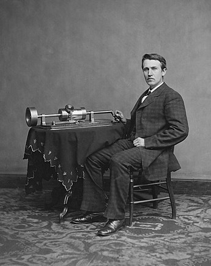
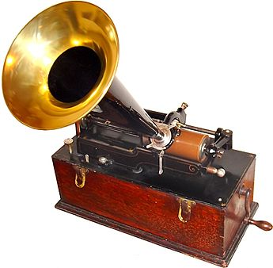

Edison eredeti célja egy táviratokat papírszalagra rögzítő, majd a rögzített üzeneteket bármikor újra feladni képes készülék kifejlesztése volt.
Ennek kapcsán elkezdett kísérletezni telefonbeszélgetések papírszalagra rögzítésével, de különösebb eredmény nélkül. A következő ötlete egy vékony ónfóliával bevont henger volt. A kézirajzból munkatársa, John Kruesi 30 óra alatt elkészítette az első kezdetleges, de már működő kísérleti készüléket. A hagyomány szerint mindössze néhány szó rögzítésére volt képes, ez a „Mary had a little Lamb” gyerekdal egy sora volt, a tekercs néhány lejátszás után tönkre is ment. Úgy tartják, ez az esemény 1877. augusztus 12-én volt, de Edison titkárának naplója szerint a valós dátum december eleje. A szabadalmi kérelmet december 24-én nyújtották be és 1878. február 19-én kapták meg. Edison 1878. január 24-én a készülékek gyártására megalapította az Edison Speaking Phonograph Company céget. A készüléket tíz éven keresztül folyamatosan fejlesztették, bevezették a viaszhengert, kicserélték a tűket, újabb tipusokat vezettek be, mint az „Improved Phonograph” és a „Perfected Phonograph”. A készülékek forgalmazására 1887-ben megalapították az Edison Phonograph Company céget.
A készülék igen sikeres volt, de forgalmazását szabadalmi okok nehezítették, cégek szűntek és alakultak meg jogi okokból, majd 1896-ban megalapították a National Phonograph Company céget. A készülék fejlesztése is tovább folyt. Bevezették a felhúzós motorokat, ezután nem kellett a tengelyt egyenletes tempóban folyamatosan forgatni. 1898-ban készült el a klasszikus Edison Standard Phonograph.
A hangot egy tölcsér gyűjti össze, ennek végén egy membrán található, amelyet a hang rezgésbe hoz. A membránhoz egy acéltű kapcsolódik, amely egy forgó viaszhengerre spirálisan belekarcolja a hangnak megfelelő rezgéseket. Viasz helyett eleinte vékony ónréteggel bevont hengereket is használtak. A visszajátszás ennek pontosan a fordítottja volt. A hengerre rögzített barázda megmozgatta a tűt, az átadta a rezgéseket a membránnak, majd a tölcsér hallhatóra erősítette a hangot.
A készülék alapja két, egymással szinkronban forgó vízszintes fémtengely. Az alsóra kellett ráhúzni a hengert, a vele szinkronban forgó felső tengelyen spirálbarázda volt, amely a hangszedő tűt a henger minden fordulatánál annyival elmozgatta, hogy a tű pontosan kövesse az alatta lévő barázdát. A készüléket eleinte kézzel kellett tekerni, később felhúzós motor működtette. A jel rögzítése vertikálisan történt, nagyobb jel mélyebb barázdát vágott a hengerbe.
A hangminőség eleinte gyenge volt, a játékidő 2 perc, a hengerek élettartama nem volt több, mint néhány tucat lejátszás. Később új hengeranyagok kikísérletezésével a hangminőség jelentősen javult, a műsoridő 4 percre növekedett. A hordozható, viszonylag kis méretű fonográfkészülékek évtizedeken át használatban maradtak, egyetlen lehetőségként házi, vagy stúdión kivüli hangrögzítésre a magnetofon megjelenéséig. Használták diktafonként, népdalok gyűjtésére, vagy híres emberek hangjának megörökítésére.
 Forrás: https://hu.wikipedia.org/wiki/Fonográf